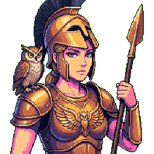
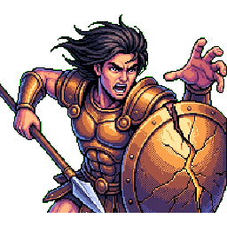
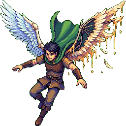
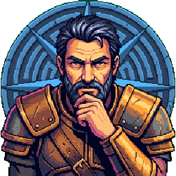
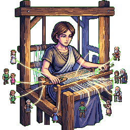

The Labors of Arête
You have been summoned to Mount Olympus, and not to fight. Athena, goddess of wisdom, is tired of watching mortals bungle something harder.
Use → (or Next) to advance and to reveal points one at a time. F = fullscreen.
"Forget the Monsters"
"Today's labor is harder than slaying any beast," Athena says, grey eyes cool. "Today you learn to live well."
- She will use the heroes you know, but not the way you expect.
- No swords. No quests. Just one question: what kind of person should you be?
- The philosopher behind it all is a man named Aristotle, and she has opinions about him.
Before Training Begins
Five gut-checks, with no right answers. Just say where you stand. We will come back to them when training ends.
Being a good person is more about who you are than what you do.
You can learn to be virtuous the same way you learn a skill — by practice.
A truly good life requires good friends, not just good choices.
There's a "right amount" of every emotion — even anger can be a virtue if felt at the right time and in the right way.
A society's laws and institutions are partly responsible for whether its citizens are virtuous.
The Philosopher
"He was my father's student," Athena says. "Well, my father's student's student. Plato taught him. But he thought Plato was too abstract."
- Aristotle (384–322 BCE) studied at Plato's Academy for twenty years, then broke away.
- He tutored Alexander the Great, founded the Lyceum, and studied everything: biology, politics, logic, poetry.
- Where Plato looked up to ideal Forms, Aristotle looked around, at how people live, thrive and fail.
- His ethics starts from a simple question: "What does a flourishing human life actually look like?"
Two Ways to Find the Good
"He was brilliant," Athena concedes. "But he thought my father was too stuck in the sky."
The Good is a transcendent Form: eternal, perfect, known through reason alone.
Know the Form of the Good, and right action follows. Philosophy is the path.
The good is how you actually live: a practical matter of habit, character and community.
The goal isn't to know the good but to become good (NE II.2). Practice is the path.
Spot the Difference
Plato
Aristotle
"The Good is an eternal Form, known through reason alone."
"Ethics starts from how people actually live, thrive, and fail."
"Know the Form of the Good, and right action will follow."
"The goal is not to know the good but to become good."
"You become good through habit, character, and community."
"To find the good, look up, beyond ordinary life."
Eudaimonia
"Every mortal wants to be happy," Athena says. "But most of you have no idea what that actually means."
- Everything we do aims at some good. What is the final good, wanted for its own sake?
- Aristotle calls it eudaimonia (εὐδαιμονία). It does not mean "happiness" but flourishing: living well across a whole life.
- It is an activity of the soul in accordance with virtue (NE I.7). It is a way of living, not a feeling.
- Not pleasure alone, not wealth (ask Midas), not fame. Each can be part of a good life; none is the whole.
Flourishing ≠ Pleasure
Athena glances toward the utilitarianism wing of the training camp. "Some people tried to reduce it all to pleasure. They were wrong."
Flourishing across a whole life: virtuous activity, good relationships, meaningful work.
A hard life lived with courage, wisdom, and friends can still be a good life.
Pleasure is the only intrinsic good; pain the only intrinsic evil.
A pleasant life counts as good by definition, however shallow it is.
What Is Eudaimonia?
Eudaimonia
Hedonism
Flourishing across a whole life
Pleasure is the only thing good in itself
A hard life lived with courage, wisdom, and friends can still be a good life
A pleasant life counts as good by definition, however shallow it is
Pain is the only thing bad in itself
Pleasure, wealth, and fame can each be part of a good life, but none is the whole
In Aristotle's Words
Eudaimonia is "activity of the soul in accordance with
virtue" (NE I.7).
It is not just a feeling but a way of
living.

The Golden Mean
"Now pay attention," Athena says. "This is where most of you go wrong."
- A virtue is a stable disposition (hexis), not a one-off act. The brave person doesn't just act bravely once; they are brave, reliably.
- Each virtue sits between two vices: excess and deficiency. Courage lies between rashness and cowardice; generosity between prodigality and stinginess.
- The mean is not an arithmetic midpoint. It shifts with the person and the situation.
- Some feelings and actions have no mean at all. There is no right amount of spite or theft.
- What counts as courage for a trained warrior differs from what counts for a civilian. Seeing which response the moment calls for takes phronesis, or practical wisdom.
The Rage of Achilles
"Look at Achilles," Athena says. "Unmatched physical courage, and a total disaster of a human."
- He was the Greeks' best fighter in their long war against Troy.
- His own commander humiliated him over a share of the spoils, so he sat in his tent while his allies were slaughtered.
- He returned only when the Trojans killed his closest friend, then killed their prince and dragged the body behind his chariot.
- "My father's poets called it 'heroic,'" Athena snorts. "I call it a lack of self-government."
Courage: Finding the Mean
Aristotle uses courage as the classic virtue. But it's not just "not being afraid."
- Deficiency (Cowardice): Fleeing in fear, prioritizing safety over honor.
- Excess (Rashness): Rushing headlong into danger without reason. Achilles in battle.
- The Mean (Courage): Facing the right things, for the right reason, in the right way, at the right time.
- His rage, sulking and then desecrating a fallen foe, is a second failing. Aristotle calls it irascibility: the excess of good temper, not of courage.

The Flight of Icarus
Athena sweeps her hand, and the scene changes to a boy soaring over the Aegean. "Next, a boy who thought he was a bird."
- Trapped in the Labyrinth, the master inventor Daedalus built two sets of wings made of feathers and wax for himself and his son, Icarus.
- Before they flew, Daedalus gave a strict warning: Do not fly too high, or the sun will melt the wax. Do not fly too low, or the damp sea will weigh down the feathers.
- But once in the air, the thrill of flight overcame Icarus. He flew higher and higher, the wax melted, and he plunged into the sea.
The Literal Middle Path
"Daedalus wasn't just giving flight instructions," Athena notes. "He was explaining the Mean."
- Icarus's tragedy is the Doctrine of the Mean made literal.
- The Deficiency (Damp Sea/Timidity): Flying too low, being too fearful to rise and escape.
- The Excess (Blazing Sun/Rashness): Flying too high, intoxicated by pride and thrill.
- The Mean (The Middle Way): temperance and moderation, escaping safely by recognizing your limits.
Explore the Mean
Pick a character and a virtue domain. The marker shows where their myth places them on the spectrum. Green means near the mean; amber or magenta means trouble.
Test the Doctrine
A virtue is a stable disposition, not just a single good act.
The mean is relative to the person and the situation.
Each virtue lies between an excess and a deficiency.
The mean always means choosing the exact mathematical average.
Virtue is innate — you either have it or you don't.
Every feeling and action has a mean, so there is a right amount of spite or theft.
Practice Makes Virtuous
"How do you think my heroes got good at fighting?" Athena asks. "Practice. Ethics is no different."
- Aristotle calls this habituation (ethismos): "We become just by doing just acts, temperate by doing temperate acts" (NE II.1).
- Virtue is not a set of rules you memorize. It's a stable disposition (hexis) built over time.
- Just as you learn to play the lyre by playing the lyre, you learn to be patient by practicing patience.
- But practice alone isn't enough. You need to know *what* to do in each unique situation.

The Cunning of Odysseus
Athena points to her favorite mortal. "Odysseus isn't the strongest. He's the one who gets home."
- Trapped by the Cyclops, he did not charge in blind fury, which would have meant death. He got the giant drunk, said his name was "Nobody," and blinded him.
- To hear the Sirens without wrecking, he had his crew plug their ears with wax and lash him to the mast.
- Back in Ithaca he passed as a beggar for days, enduring insults to survey the household before striking.
Phronesis: Wisdom in Action
Odysseus shows phronesis, or practical wisdom. It is the master virtue that coordinates all the others.
- Phronesis is the ability to perceive what a situation requires and find the right mean.
- In the cave, raw courage without phronesis would have been suicide (rashness). Odysseus's restraint was the true mean.
- "Phronesis is situational intelligence," Athena explains. "It connects intellectual smarts with a good character. Without it, cleverness is just a weapon."
Wisdom ≠ Cleverness
Aristotle separates practical wisdom from mere cleverness (NE VI.12). "I've seen very clever people do terrible things," Athena adds.
Aims at the genuinely good; requires good character.
Odysseus gets everyone home safely by reading each situation and choosing well.
Can serve any end, including wicked ones.
A con artist reads people brilliantly, but toward selfish ends. That is cleverness without character.
The Tragedy of Medea
Athena's voice drops. "And then we have Medea. Brilliant, powerful, and utterly consumed."
- Medea used her magic to help Jason steal the Golden Fleece, betraying her own family for him. But years later, Jason abandoned her to marry the princess of Corinth.
- Blinded by jealousy and betrayal, Medea plotted a horrific revenge. She sent a poisoned robe to Jason's new bride, who died in agony.
- To inflict the maximum possible pain on Jason, she chose to murder their own children, escaping in a chariot sent by the sun god Helios as Jason wept.
The Nightmare of Akrasia
"She wasn't stupid," Athena says. "She knew exactly what she was doing. That's what makes it terrifying."
- Euripides gives Medea a famous line: "I know what evil I am about to do, but my passion is stronger than my reason."
- The line is Euripides's, not Aristotle's. But it describes exactly what he calls akrasia: acting against your own better judgment.
- Unlike a truly vicious person who thinks doing bad is good, the akratic person *knows* what is right but is overcome by desire or anger.
- Without self-mastery and phronesis, Medea's brilliant cleverness became a tool of pure destruction.
Decision Point: Knowing and Not Doing
Not graded. Two of the answers below belong to two philosophers who disagreed about it for a lifetime.
You did not really know. If you had, you would have done it.
You knew, but the knowledge was not gripping you at that moment.
You knew, and you chose otherwise. There is nothing more to say.
Why Practice?
He didn't believe in formal education at all.
Knowledge of the good automatically makes you virtuous.
Virtues are genetic traits — you're born with them or not.
Virtues are dispositions formed by habit, like craft skills.
The Theft of Fire
"You can't flourish alone," Athena says. "Even the Titan who made you learned that the hard way."
- Prometheus pitied humanity, cold and helpless in the dark. Defying Zeus, he stole fire in a hollow fennel stalk and gave it to mortals.
- With fire came civilization, science and the arts. Zeus chained him to a rock in the Caucasus, where an eagle ate his liver daily.
- "A noble act," Athena muses. "But a life of eternal torture on a rock is not what we call a happy ending."
The Political Animal
Aristotle famously wrote: "Man is by nature a political animal" (Politics I.2).
- For Aristotle, humans cannot fully flourish in isolation. We need a polis (community/city-state) to practice virtue and live well.
- Prometheus gave humanity the tools to build a community, but he was cast out of it. An individual on a rock, even a noble one, cannot achieve eudaimonia.
- Flourishing requires shared laws, education, and social institutions. Virtue is co-authored with the community you inhabit.

The Loom of Penelope
"If you want to see virtue that sustains an entire kingdom," Athena says, "look at Penelope."
- With Odysseus missing twenty years, 108 suitors overran Ithaca, demanding her hand and eating the palace bare.
- Her trick: she would marry once a burial shroud was finished. She wove it by day and unravelled it by torchlight at night.
- Three years of that, protecting her son, her household and the throne by patient intelligence.
Philia: Virtue in Community
Penelope's story shows that virtue is relational. It requires philia (friendship/broad social loyalty).
- Aristotle claims friendship is one of the greatest external goods for eudaimonia (NE VIII).
- The highest form is virtue-friendship, where friends love each other for their character, helping each other grow.
- Friendships of usefulness and of pleasure are real friendships too, only lesser ones.
- Penelope's virtue wasn't a solo act of heroic pride like Achilles's; it was a communal anchor that kept the social fabric of Ithaca from tearing apart.
Me vs We
Modern ethics often asks "what should I do?" Aristotle asks something bigger.
What should I do in this situation? Ethics as personal decision-making.
A lonely hero choosing right is admirable, but Aristotle would say incomplete.
What kind of polis produces virtuous people? Character and community are inseparable.
Penelope's virtue is woven into Ithaca itself. It needs good laws, good neighbors and good friends.
Decision Point: Can You Be Good on Your Own?
Not graded.
Yes. Character is inside a person. Bad surroundings change what virtue costs, not whether you have it.
No. Virtue needs a community to be practised on, so it cannot survive without one.
You could have a good character and still be denied a flourishing life.
Would Aristotle Agree?
Humans flourish in community, not in isolation.
Laws and institutions shape moral character.
Virtue-friendship — loving someone for their character — is the highest kind.
A hermit can flourish fully without any community at all.
The state should stay out of ethics entirely.
Friendship based on usefulness is not really friendship at all.
The Tradition Lives
"Mortals spent centuries arguing about rules and calculations," Athena says. "Then some of them remembered to ask the question that matters."
- After centuries dominated by utilitarianism ("maximize happiness") and deontology ("follow the rules"), virtue ethics came roaring back in the 20th century.
- Why? Because rules and calculations feel incomplete without asking: what kind of person should I be?
- Three modern philosophers picked up Aristotle's project and ran with it, each in a different direction.
Three Modern Paths
Each updates Aristotle for the modern world: same root, different branches.
- MacIntyre (After Virtue, 1981): virtues live inside practices and traditions.
- Shared activities with internal goods; ongoing communal narratives.
- His charge: modern individualism has fragmented our moral vocabulary, and we need to recover it.
Three Modern Paths: Foot
- Foot (Natural Goodness, 2001) called this neo-naturalism: virtues are natural excellences of a species.
- We already judge living things this way. Deep roots are an excellence in an oak; a lioness who will not feed her cubs has gone wrong as a lioness.
- Justice is ours. A human being who lacks it is defective as a human, in the same plain sense.
Three Modern Paths: Hursthouse
- Hursthouse (On Virtue Ethics, 1999): an action is right if and only if it is what a virtuous agent would characteristically do.
- The standard complaint about virtue ethics is that it tells you what to be and not what to do.
- This answers it. Faced with a decision, ask what a courageous or generous or just person would do here. That is a question you can actually work on.
Same Root, Three Branches
Virtues make sense within shared practices and living traditions.
A chess player's honesty, a community's inherited sense of justice: virtues need a social home.
Virtues are natural human excellences, judged the way we judge any living thing.
A human without justice is defective as a human, like a lioness who won't nurse her cubs.
An action is right if it's what a virtuous person would characteristically do.
"What would a courageous or generous or just person do here?" That is virtue ethics as a practical guide.
Match the Philosopher
MacIntyre
Foot
Hursthouse
"Virtues make sense only inside shared practices and living traditions."
"A human who lacks justice is defective as a human, like a lioness who won't feed her cubs."
"An action is right if it is what a virtuous person would characteristically do."
"Modern individualism has broken up our moral vocabulary, and we need to recover it."
"Virtues are natural excellences, judged the way we judge any living thing."
"Faced with a choice, ask what a courageous or just person would do here."
Complete the Map
MacIntyre argues virtues make sense within practices and
traditions.
Hursthouse says an action is right if it's what a virtuous agent would do.
Foot calls virtues natural excellences of the human species.
Revisit Your Instincts
Here is where you stood before training began. Re-rate each one and see whether Athena shifted anything. Staying put is fine; the question is whether you can now say why.
Go Practice
"Knowing the mean isn't enough," Athena says, already turning away. "You have to live it."
- Eudaimonia: flourishing, the activity of the soul in accordance with virtue.
- The mean: a disposition between excess and deficiency, found by practical wisdom.
- Habituation and phronesis: virtue is practiced, not just taught, and wisdom unifies it.
- The polis and friendship: you cannot flourish alone.
- The tradition continues: MacIntyre, Foot, Hursthouse.
Visit every slide, answer every question, and submit both belief probes.
For Further Reading
- Aristotle, Nicomachean Ethics, books 1 and 2. Read online. Eudaimonia, virtue as a habit, and the doctrine of the mean.
- Alasdair MacIntyre, After Virtue (University of Notre Dame Press, 1981), chapters 14 and 15. Virtues as rooted in practices, the story of a life, and traditions.
- Philippa Foot, Natural Goodness (Oxford University Press, 2001), chapters 2 and 3. Judging human character the way we judge any living thing.
- Rosalind Hursthouse, On Virtue Ethics (Oxford University Press, 1999), chapter 1. How virtue ethics can tell you what to do, not just who to be.
- Rosalind Hursthouse and Glen Pettigrove, “Virtue Ethics,” Stanford Encyclopedia of Philosophy (2003, rev. 2026). Read online. An overview of the field and its main modern forms.
About this lesson. Brendan Shea, PhD, wrote this lesson with help from AI tools. Claude (Anthropic) helped draft the text and code and check facts, and the illustrations were made with AI image generators. The author reviewed everything and is responsible for any errors.